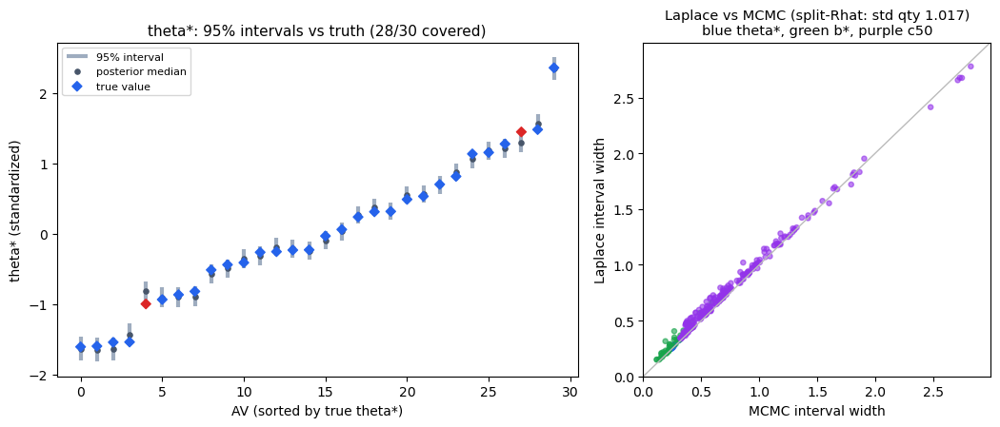
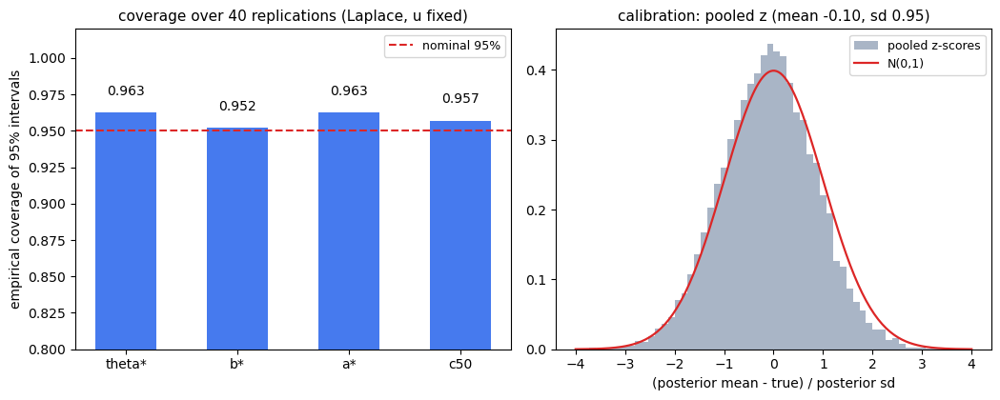

불확실성까지 믿을 수 있는가: 구간의 보정 검증
A1은 점 추정이 참값을 복원함을 보였다. 논문에서는 "이 AV의 강건성은 1.2 ± 얼마"처럼 불확실성을 함께 보고해야 하므로, A2에서는 구간 추정 절차를 정하고 그 구간이 약속을 지키는지 검증했다. 결론: MAP + Laplace 근사로 만든 95% 구간이 MCMC와 사실상 일치하고(끝점 상관 ≥0.999), 40회 반복 실험에서 참값을 95.2~96.3% 덮는다. 명목 95%의 약속을 지키는, 약간 보수적인 구간이다. 코드는 analysis/a1-identifiability/a2_uncertainty.py에 있다.
무엇을 물었나
구간 추정이 의미가 있으려면 두 가지가 맞아야 한다. 첫째, 빠른 근사로 만든 구간이 정확한 사후분포의 구간과 같아야 하고(근사의 질), 둘째, "95% 구간"이라 말했으면 반복해서 실험할 때 실제로 참값을 95% 비율로 덮어야 한다(보정, coverage). 시험 비유로 하면, 채점 이론이 "이 수험생의 실력은 이 범위 안에 있을 확률 95%"라고 말할 때 그 말이 장기적으로 들어맞는지를 확인하는 것이다.
확정한 절차
A1과 같은 설계(AV 30 × 생성기 8 × severity 5 × 반복 30, u는 외부 라벨로 고정)에서 다음 절차를 확정했다. 먼저 MAP으로 봉우리를 찾고, 그 주변을 Laplace 근사로 둘러싼다. 사후분포라는 산의 정상 곡률(Hessian)을 재서 매끈한 종 모양(다변량 정규)으로 근사하는 방법으로, 표본 추출 없이 공분산이 바로 나와 빠르다. 거기서 표본을 뽑아 A1과 같은 재표준화를 적용한 뒤, 보고 양인 θ*(표준화 강건성)·b*(표준화 난이도)·a*·c₅₀의 95% 백분위 구간을 만든다.
이 근사를 두 방향에서 검증했다. 하나는 같은 데이터에서 MCMC(사후분포에서 직접 표본을 뽑는 표준 방법. 여기서는 Laplace 공분산을 제안분포로 쓰는 전처리 랜덤워크, 4체인 × 16만 반복)를 돌려 구간을 대조하는 것이고, 다른 하나는 참값과 데이터를 40번 새로 뽑아 구간의 경험적 coverage를 세는 것이다. MCMC의 수렴은 split-R̂(체인들이 같은 분포에 도달했는지 보는 진단, 1에 가까울수록 좋음)로 확인했고, 보고 양 기준 1.017로 깨끗했다.
결과 1 · Laplace 구간은 MCMC 구간과 같다
네 가지 보고 양 모두에서 Laplace와 MCMC의 95% 구간 끝점이 상관 0.999 이상으로 일치했고, 구간 폭은 Laplace 쪽이 5~18% 넓었다. 즉 빠른 근사가 정확한 답과 같은 구간을 주되, 틀릴 때도 좁아서 과신하는 쪽이 아니라 넓어서 조심하는 쪽으로 틀린다. 불확실성 보고에서는 바람직한 방향이다.

결과 2 · 구간이 약속을 지킨다 (coverage 95.2~96.3%)
참값과 데이터를 40번 새로 뽑아, 매번 Laplace 95% 구간을 만들고 참값이 안에 드는 비율을 셌다. 결과는 θ* 96.3%, b* 95.2%, a* 96.3%, c₅₀ 95.7%로, 네 양 모두 명목 95%에 정확히 붙는다. 더 촘촘한 진단으로, (추정 평균 − 참값)을 추정 표준편차로 나눈 z-점수를 모두 모으면 보정이 완벽할 때 표준정규가 되어야 하는데, 실제 분포가 평균 −0.10, 표준편차 0.95로 표준정규에 가깝게 겹쳤다. 표준편차가 1보다 약간 작다는 것은 구간이 약간 보수적이라는 뜻으로, coverage가 95%를 살짝 넘는 것과 앞뒤가 맞는다.

부수 발견 둘
첫째, 처음에는 근사 검증을 중요도 표본(importance sampling)으로 하려 했는데, 54차원에서는 유효표본수가 20,000개 중 10개 남짓으로 붕괴했다. 결합분포 전체를 한 번에 겨냥하는 중요도 표본은 차원이 높아지면 가중치가 소수 표본에 쏠리는 잘 알려진 현상으로, 근사가 나빠서가 아니다(그 증거가 위의 coverage다). 그래서 검증 도구를 MCMC로 바꿨다. 진짜 데이터 분석에서도 같은 이유로 결합 IS는 피해야 한다.
둘째, MCMC에서 원시 모수의 R̂(1.083)보다 표준화 양의 R̂(1.017)가 뚜렷이 좋았다. 느리게 움직이는 방향이 바로 a와 θ·b가 맞교환되는 척도 자유 방향인데, 우리가 보고하는 표준화 양은 그 방향에 불변이라 영향을 받지 않는다. A1에서 본 식별 구조가 수렴 진단에서도 그대로 나타난 셈이고, 수렴 판단은 보고 양 기준으로 하는 것이 맞다는 실무 지침을 준다.
다음 단계
추정 절차는 확정됐다: MAP + Laplace 근사 + 재표준화, u는 외부 라벨 고정, 보고는 θ*·b*·a*·c₅₀의 점 추정과 95% 구간. 진짜 데이터에서 사후분포가 정규에서 멀어질 조짐이 보이면(예: 칸이 적거나 극단 모수) 같은 코드의 MCMC로 바로 대체할 수 있고, 논문 제출 시점에는 Stan 같은 표준 도구로 한 번 더 재현하면 된다. 다음은 로드맵의 A3(난이도 공변량 확정)다. 섹션 C·E에서 모은 후보(Wagner TTR, Yu 복잡도, Tulpule 가치함수, Kurian Rp)를 설명적 IRT에 넣어 난이도 b를 시나리오 특징의 함수로 푸는 준비를 한다.